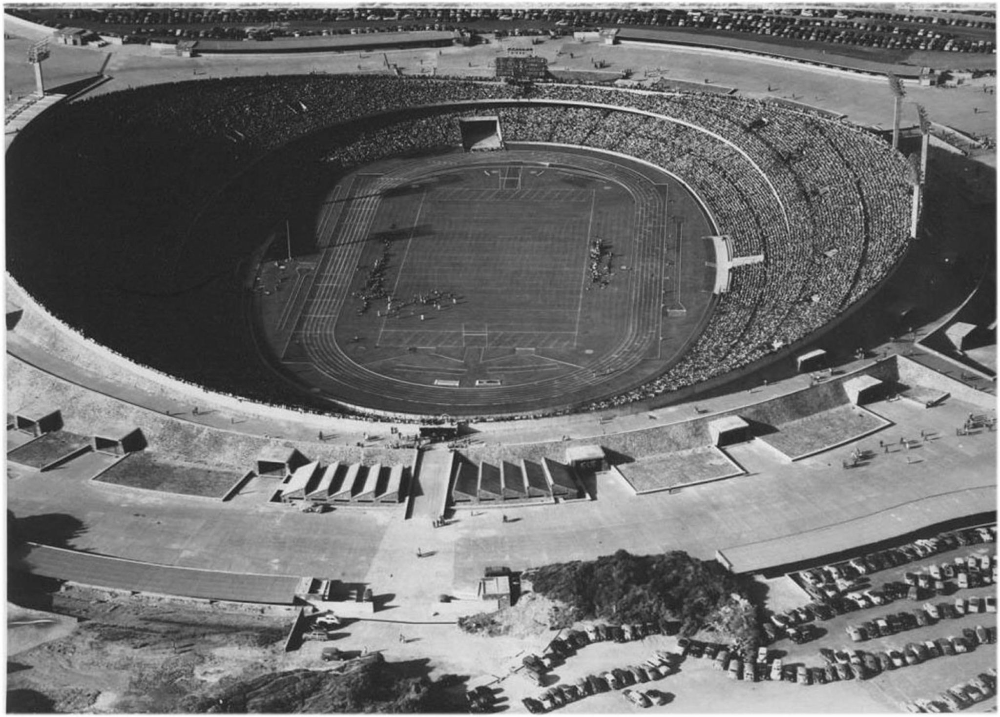
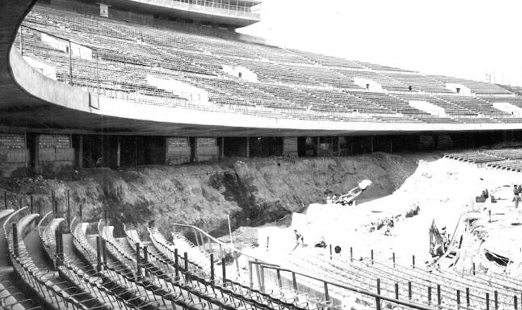
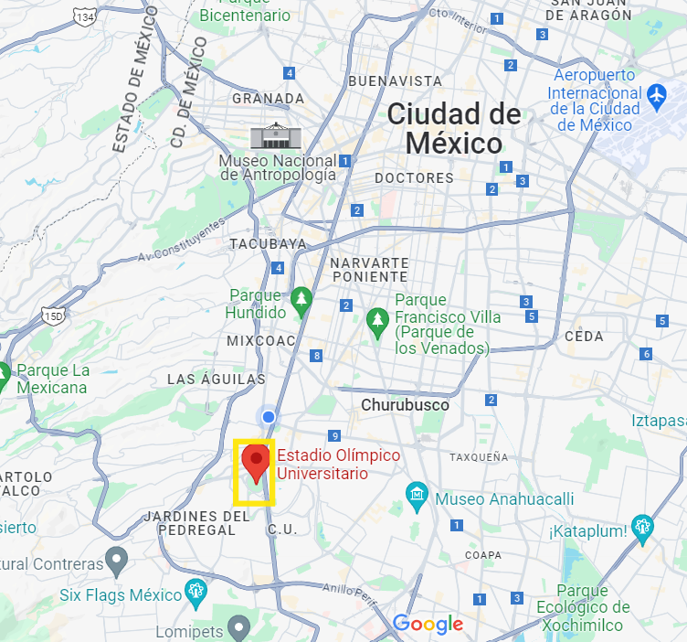
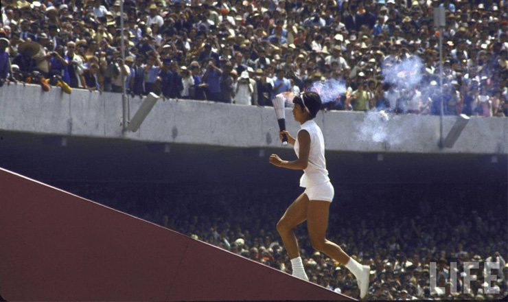
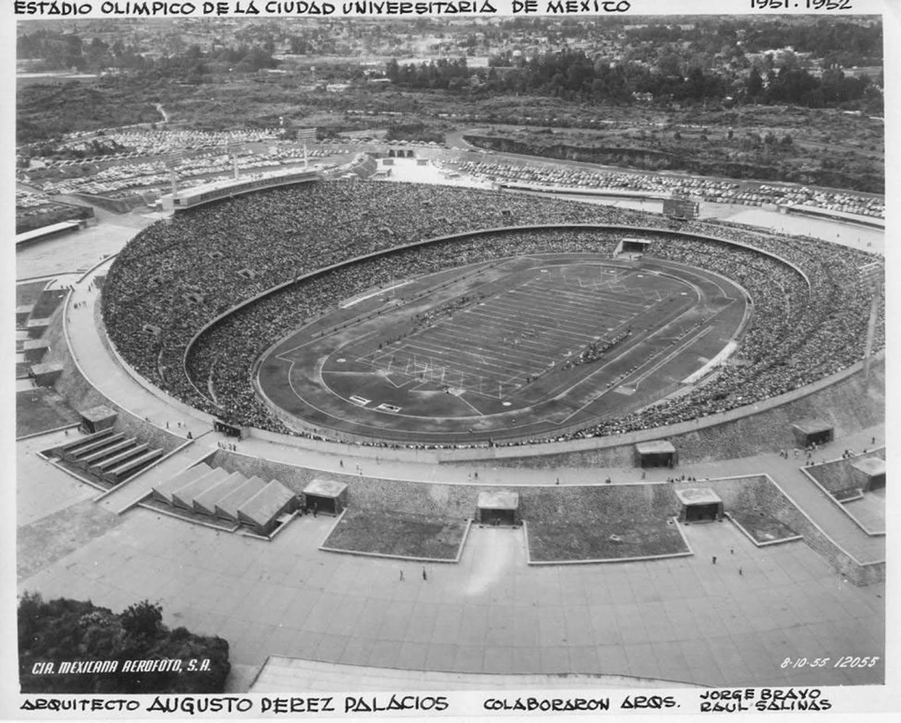
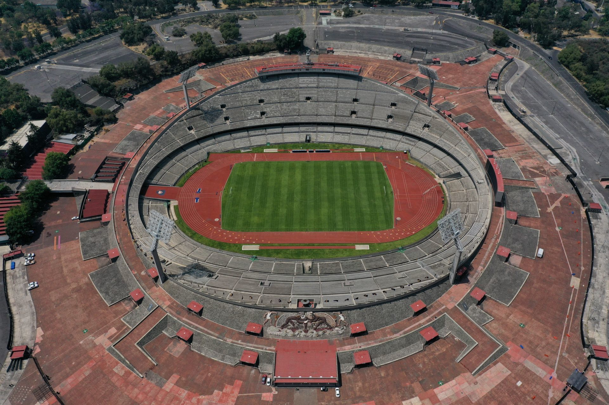

Contexto Histórico

El proyecto del estadio fue asignado al arquitecto Augusto Pérez Palacios, en colaboración
con Raúl Salinas Moro y Jorge Bravo Jiménez, en marzo de 1950. La construcción del
estadio se completó en sólo ocho meses y costó 28 millones de pesos.
Fue inaugurado el 20 de noviembre de 1952 en una ceremonia encabezada por el
presidente de México Miguel Alemán Valdés y el rector de la UNAM Luis Garrido Díaz, para
después, al filo de las 5:30 de la tarde, dar paso a los II Juegos Juveniles Nacionales. Pocos
días después fue testigo del clásico universitario de fútbol americano entre los Pumas de la
UNAM y los Burros Blancos del IPN, del cual resultó victorioso la UNAM con un marcador
de 20-19.
El estadio adquirió relevancia internacional al ser sede de los Juegos Olímpicos de 1968,
celebrados en la Ciudad de México. Durante los Juegos Olímpicos, albergó las
ceremonias de inauguración y clausura, así como las competiciones de atletismo y algunos
eventos de fútbol. Este evento consolidó al Estadio Olímpico Universitario como un ícono
del deporte mundial.
En la actualidad, el estadio es el hogar del equipo de fútbol Pumas de la UNAM y Pumas CU de futbol Americano,
siendo unos de los equipos más populares de la liga mexicana y la ONEFA respectivamente. Además de eventos deportivos,
el estadio también es utilizado para conciertos, eventos culturales y ceremonias académicas. Su capacidad ha sido ajustada
a lo largo de los años, y actualmente puede albergar a aproximadamente 58,000 espectadores.

Ubicación del Recinto

El estadio se encuentra en la Ciudad de México, específicamente en el Pedregal de San
Ángel, en una hondonada natural que fue aprovechada para construir el estadio. (Av. de
los Insurgentes Sur S/N, C.U., Coyoacán, 04510 Ciudad de México, CDMX)
Eventos Importantes en el Recinto
El estadio ha sido sede de varios eventos deportivos y culturales importantes, incluyendo:
- Juegos Centroamericanos y del Caribe de 1954.
- Juegos Panamericanos de 1955.
- Campeonato Panamericano de Fútbol de 1956.
- Juegos Olímpicos de 1968.
- Copa Mundial de Fútbol de 1986.
- La Universiada Mundial de 1979.
- Torneos de fútbol Americano Universitario Nacional e Internacional.
- El salto de longitud récord mundial establecido por Bob Beamon en los Juegos Olímpicos de 1968.
- El primer partido de fútbol entre selecciones nacionales en la historia del estadio, disputado en el Campeonato Panamericano de Fútbol de 1956.
- La victoria de la selección mexicana en el Torneo de Fútbol de los Juegos Centroamericanos y del Caribe de 1954.

Su Arquitectura

El Estadio se creó de una atención al sitio, a los materiales del lugar y a las condiciones del
terreno, donde existía una depresión natural para la cancha. La lava volcánica del terreno
se rompió, se escarbó y ese material se utilizó de manera perimetral a la cancha, y se
formaron las graderías inferior y superior. ‘Es obra de los arquitectos Augusto Pérez Palacios
(autor principal), Jorge Bravo Jiménez y Raúl Salinas Moro, trabajaron con un grupo de
ingenieros y sabían las necesidades del fútbol americano, que era uno de sus principales
usos, además de las competencias de atletismo ’, explica la especialista.
Patrimonio de la Humanidad y Actualidad
Como parte integrante del Primer Circuito Universitario de la Ciudad Universitaria de la
UNAM, el 28 de junio de 2007 fue inscrita por la Unesco en la lista de sitios que son
Patrimonio Cultural de la Humanidad. Actualmente el estadio sigue siendo un importante
recinto deportivo y cultural en la Ciudad de México, anfitrión de varios eventos deportivos
y culturales cada año. En 2018, el estadio celebró su 66 aniversario con una ceremonia especial
que contó con la presencia de la ex-atleta Enriqueta Basilio, quien encendió el pebetero olímpico.
